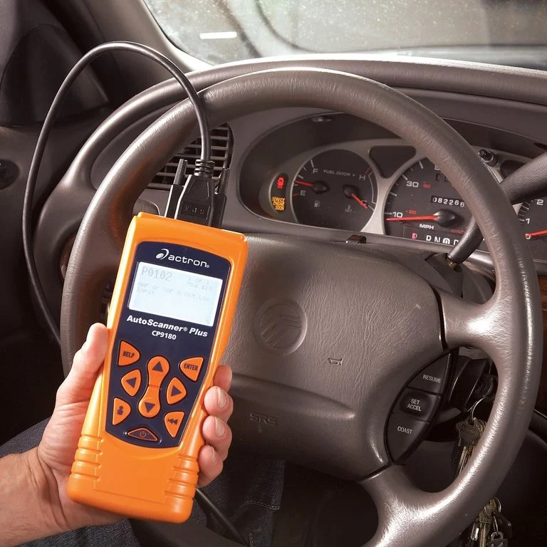
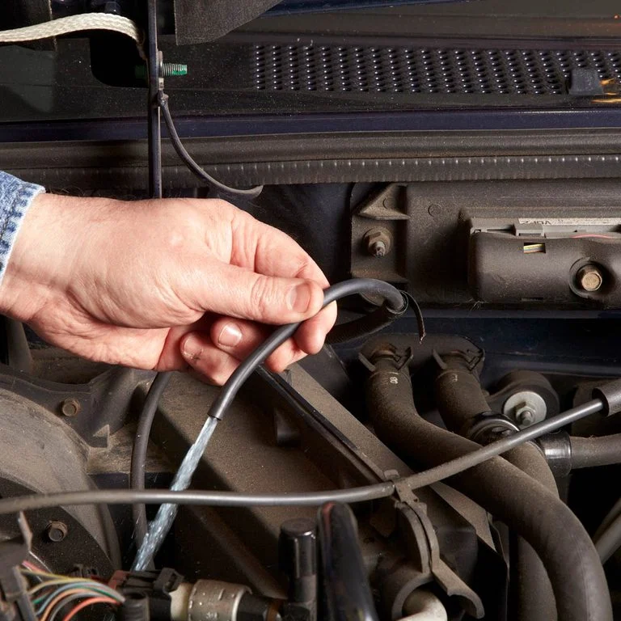

Car Repairs You Don’t Need to Go To The Shop For Vehicle repairs.
You can easily do these in your own garage.
|  Use a Code Reader: Diagnose car problems without going to a mechanic with an auto code reader. Simply plug it into the car’s computer system, then interpret the trouble code readout to see what repairs you might need to do. |
Solve Rough Idle by Cleaning EGR Valve: Rough idle? A good dousing with throttle body cleaner may be enough to restore your EGR valve to near-mint condition, transforming a harsh idle into a soothing hum. |
Replace Sway Bar End Links: Fixing a clunk when your car hits a bump is a trial and error process. Start with the stabilizer bushings and then the bar end links, using a special tool. Replacing sway bar links is way cheaper than you think. |
Replace Headlights: The hardest part of the job is choosing a new bulb. You can spend more time shopping for the bulbs than it takes to install them. The choices are mind-boggling. Every bulb manufacturer has its own confusing names for each style, making comparisons difficult. But it boils down to four upgrade categories—brightness level, life span, light color and energy consumption. |
Fix a Horn Problem: Use a simple fused jumper to pinpoint the problem with a bad horn. Often the fix is simple and cheap. |
Clear Up Cloudy Headlights: Clear your fogged or yellowed headlight lenses in 45 minutes for less than $15, rather than spending $100s to replace them. |
|  Troubleshoot Windshield Washers: windshield washer that doesn’t pump enough fluid is annoying and even hazardous. |
 Fix Your Power Door Locks: Repair broken power locks by replacing the actuator, which is a common problem on late-model Fords. You’ll save on the shop fee plus some of the new part cost. |
Replace a Serpentine Belt: Automatic belt tensioners, standard in most cars now, make changing a serpentine belt a simple DIY repair. |
Engine Repair: Regular engine maintenace can bring power and efficiency back to your car. If your vehicle is past the point of preventative maintenance,Complete Auto Care can tend to engine repairs to help your vehicle last longer. With something as important as engine repair, trust the experts. A/C Repair: When auto air conditioning systems break down, experts at Complete Auto Care are ready to get your A/C system back to where it should be. Getting a car air conditioner service at the first sign of trouble can save you both money and time. Come visit us for an A/C service repair before any damage spreads. Brake Repair: From brake pads and brake rotors to brake calipers and the master cylinder, Firestone Complete Auto Care professionals can repair or replace brake parts to keep your brakes working like they're supposed to. Your nearby store will check your squeaking or grinding brakes during our free brake inspection*, so you can have confidence your brakes are working right. |